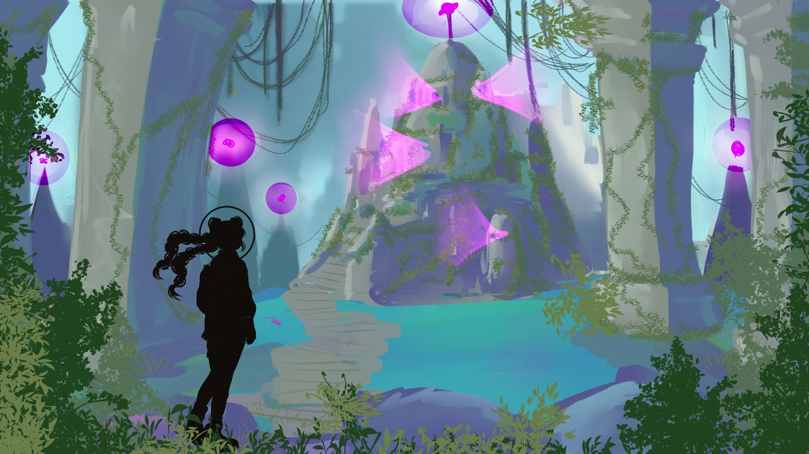
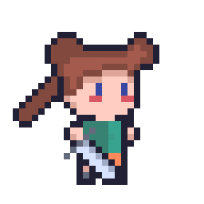
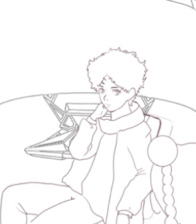

Acerca de Stellar Wanderer
Resumen
Esta historia está ubicada en una galaxia bastante lejana en el planeta Astro-12X, un mundo conocido por su avanzada tecnología y paisajes exóticos. Es el hogar de Stella Nova, una valiente joven que desde pequeña ha soñado con unirse a los guardianes espaciales, una élite encargada de mantener la paz y la armonía entre los diferentes mundos y especies.
Personajes Principales
- Stella Nova – Protagonista, de unos 22 años, bastante extrovertida y entusiasta.
- Meera – La capitana de la nave, de unos 30 años, bastante mandona y algo malhumorada, con cabello tinturado.
- Marak – El técnico de vuelo, de unos 29 años, bastante calmado e inteligente. Con cabello ondulado castaño.
- Aeron – Un guardián espacial, de unos 30 años, bastante relajado y alto. Hace chistes algo malos.
- Jex – El cocinero de la tripulación, de unos 26 años, muy sabio y amable. Es algo gordo.
- Avior – El ingeniero de sistemas, de unos 26 años, hace chistes malos todo el tiempo pero es bastante leal. Tiene cabello ondulado de color negro.
Personajes Secundarios
- Morpheus – El secretario de la organización, unos 30 años, viste bastante a la moda y se ve serio.
- Ronan – El comandante de la organización de guardianes estelares. No se sabe su edad, es bastante reservado.
Informe de Redes

Descarga el informe completo sobre el desempeño del proyecto en redes sociales para obtener más detalles sobre nuestro impacto y crecimiento.